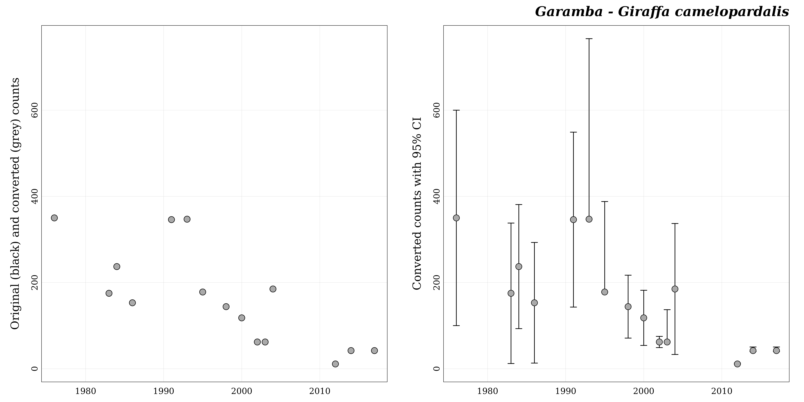

1. The garamba dataset
head(garamba, 30)
#> location species year stat_method field_method counts
#> 1 Garamba Alcelaphus buselaphus 1976 S A 7750
#> 2 Garamba Alcelaphus buselaphus 1983 S A 1932
#> 3 Garamba Alcelaphus buselaphus 1984 S A 1224
#> 4 Garamba Alcelaphus buselaphus 1986 S A 1705
#> 5 Garamba Alcelaphus buselaphus 1991 S A 987
#> 6 Garamba Alcelaphus buselaphus 1993 S A 3444
#> 7 Garamba Alcelaphus buselaphus 1995 S A 2819
#> 8 Garamba Alcelaphus buselaphus 1998 S A 1685
#> 9 Garamba Alcelaphus buselaphus 2000 S A 1169
#> 10 Garamba Alcelaphus buselaphus 2002 S A 1139
#> 11 Garamba Alcelaphus buselaphus 2003 S A 1595
#> 12 Garamba Alcelaphus buselaphus 2004 S A 1204
#> 13 Garamba Alcelaphus buselaphus 2012 T A 552
#> 14 Garamba Alcelaphus buselaphus 2014 T A 698
#> 15 Garamba Alcelaphus buselaphus 2017 T A 1051
#> 16 Garamba Giraffa camelopardalis 1976 S A 350
#> 17 Garamba Giraffa camelopardalis 1983 S A 175
#> 18 Garamba Giraffa camelopardalis 1984 S A 237
#> 19 Garamba Giraffa camelopardalis 1986 S A 153
#> 20 Garamba Giraffa camelopardalis 1991 S A 346
#> 21 Garamba Giraffa camelopardalis 1993 S A 347
#> 22 Garamba Giraffa camelopardalis 1995 S A 178
#> 23 Garamba Giraffa camelopardalis 1998 S A 144
#> 24 Garamba Giraffa camelopardalis 2000 S A 118
#> 25 Garamba Giraffa camelopardalis 2002 S A 62
#> 26 Garamba Giraffa camelopardalis 2003 S A 62
#> 27 Garamba Giraffa camelopardalis 2004 S A 185
#> 28 Garamba Giraffa camelopardalis 2012 T A 11
#> 29 Garamba Giraffa camelopardalis 2014 T A 42
#> 30 Garamba Giraffa camelopardalis 2017 T A 42
#> lower_ci upper_ci
#> 1 6280 9220
#> 2 1120 2744
#> 3 782 1666
#> 4 1116 2294
#> 5 663 1311
#> 6 1290 5598
#> 7 1620 4018
#> 8 1287 2083
#> 9 945 1393
#> 10 907 1371
#> 11 1142 2048
#> 12 811 1597
#> 13 NA NA
#> 14 NA NA
#> 15 NA NA
#> 16 100 600
#> 17 12 338
#> 18 93 381
#> 19 13 293
#> 20 143 549
#> 21 347 766
#> 22 178 388
#> 23 71 217
#> 24 54 182
#> 25 49 75
#> 26 62 137
#> 27 33 337
#> 28 NA NA
#> 29 NA NA
#> 30 NA NA
## Unique locations ----
sort(unique(garamba$"location"))
#> [1] "Garamba"
## Unique species ----
sort(unique(garamba$"species"))
#> [1] "Alcelaphus buselaphus" "Giraffa camelopardalis" "Hippotragus equinus"
#> [4] "Kobus ellipsiprymnus" "Kobus kob" "Loxodonta africana"
#> [7] "Ourebia ourebi" "Redunca redunca" "Syncerus caffer"
#> [10] "Tragelaphus scriptus"
## Unique years ----
sort(unique(garamba$"year"))
#> [1] 1976 1983 1984 1986 1991 1993 1995 1998 2000 2002 2003 2004 2012 2014 2017
## Unique Stat methods ----
sort(unique(garamba$"stat_method"))
#> [1] "S" "T"
## Unique Field methods ----
sort(unique(garamba$"field_method"))
#> [1] "A"
## Is there any NA counts ----
sum(is.na(garamba$"counts"))
#> [1] 02. Formatting counts data
## Conversion data available in popbayes ----
data("conversion_data")
#> order family species english
#> 1 Artiodactyla Bovidae Aepyceros melampus Impala
#> 2 Artiodactyla Bovidae Alcelaphus buselaphus Hartebeest
#> 3 Artiodactyla Bovidae Connochaetes taurinus Blue wildebeest
#> 4 Artiodactyla Bovidae Damaliscus lunatus Tiang
#> 5 Artiodactyla Bovidae Eudorcas rufifrons Red-fronted gazelle
#> 6 Artiodactyla Bovidae Hippotragus equinus Roan Antelope
#> 7 Artiodactyla Bovidae Kobus ellipsiprymnus Waterbuck
#> 8 Artiodactyla Bovidae Kobus kob Kob
#> 9 Artiodactyla Bovidae Ourebia ourebi Oribi
#> 10 Artiodactyla Bovidae Redunca redunca Bohor reedbuck
#> 11 Artiodactyla Bovidae Syncerus caffer African Buffalo
#> 12 Artiodactyla Bovidae Tragelaphus derbianus Giant eland
#> 13 Artiodactyla Bovidae Tragelaphus scriptus Bushbuck
#> 14 Artiodactyla Giraffidae Giraffa camelopardalis Giraffe
#> 15 Proboscidea Elephantidae Loxodonta africana Savanna Elephant
#> french category pref_field_method conversion_fact
#> 1 Impala MLB G 6.747
#> 2 Bubale LLB G 2.302
#> 3 Gnou bleu LLB G 2.302
#> 4 Topi MLB G 6.747
#> 5 Gazelle Rufifron MLB G 6.747
#> 6 Hippotrague LLB G 2.302
#> 7 Cobe Defassa MLB G 6.747
#> 8 Cobe de Buffon MLB G 6.747
#> 9 Ourebi MLB G 6.747
#> 10 Redunca MLB G 6.747
#> 11 Buffle LD A 0.561
#> 12 Eland de derby LLB G 2.302
#> 13 Guib Harnache MLB G 6.747
#> 14 Girafe Giraffe A 3.011
#> 15 Elephant Elephant A 0.659
## Format data by popbayes ----
garamba_formatted <- popbayes::format_data(data = garamba)
#> ✔ Conversion data found in 'popbayes'.
#> ✔ Detecting 10 series.
## Class of the object ----
class(garamba_formatted)
#> [1] "list"
## Number of elements (# locations x # species) ----
length(garamba_formatted)
#> [1] 10
## Get series names ---
names(garamba_formatted)
#> [1] "garamba__alcelaphus_buselaphus" "garamba__giraffa_camelopardalis"
#> [3] "garamba__hippotragus_equinus" "garamba__kobus_ellipsiprymnus"
#> [5] "garamba__kobus_kob" "garamba__loxodonta_africana"
#> [7] "garamba__ourebia_ourebi" "garamba__redunca_redunca"
#> [9] "garamba__syncerus_caffer" "garamba__tragelaphus_scriptus"
## Get series content ----
names(garamba_formatted[[1]])
#> [1] "location" "species" "years"
#> [4] "n_years" "stat_methods" "field_methods"
#> [7] "pref_field_method" "conversion_fact" "data_original"
#> [10] "data_converted"3. Exploring counts series
## Extract all converted data ----
converted_data <- popbayes::get_series_data(garamba_formatted, converted = TRUE)
dim(converted_data)
#> [1] 141 9
head(converted_data, 15)
#> location species year stat_method field_method counts_conv
#> 1 Garamba Alcelaphus buselaphus 1976 S A 3366.6377
#> 2 Garamba Alcelaphus buselaphus 1983 S A 839.2702
#> 3 Garamba Alcelaphus buselaphus 1984 S A 531.7116
#> 4 Garamba Alcelaphus buselaphus 1986 S A 740.6603
#> 5 Garamba Alcelaphus buselaphus 1991 S A 428.7576
#> 6 Garamba Alcelaphus buselaphus 1993 S A 1496.0904
#> 7 Garamba Alcelaphus buselaphus 1995 S A 1224.5873
#> 8 Garamba Alcelaphus buselaphus 1998 S A 731.9722
#> 9 Garamba Alcelaphus buselaphus 2000 S A 507.8193
#> 10 Garamba Alcelaphus buselaphus 2002 S A 494.7871
#> 11 Garamba Alcelaphus buselaphus 2003 S A 692.8758
#> 12 Garamba Alcelaphus buselaphus 2004 S A 523.0235
#> 13 Garamba Alcelaphus buselaphus 2012 T A 239.7915
#> 14 Garamba Alcelaphus buselaphus 2014 T A 303.2146
#> 15 Garamba Alcelaphus buselaphus 2017 T A 456.5595
#> lower_ci_conv upper_ci_conv field_method_conv
#> 1 2728.0626 4005.2129 G
#> 2 486.5334 1192.0070 G
#> 3 339.7046 723.7185 G
#> 4 484.7958 996.5248 G
#> 5 288.0104 569.5048 G
#> 6 560.3823 2431.7984 G
#> 7 703.7359 1745.4387 G
#> 8 559.0791 904.8653 G
#> 9 410.5126 605.1260 G
#> 10 394.0052 595.5691 G
#> 11 496.0904 889.6612 G
#> 12 352.3023 693.7446 G
#> 13 227.8019 287.7498 G
#> 14 288.0539 363.8575 G
#> 15 433.7315 547.8714 G
## Extract all original data ----
original_data <- popbayes::get_series_data(garamba_formatted, converted = FALSE)
dim(original_data)
#> [1] 141 8
head(original_data, 15)
#> location species year stat_method field_method counts_orig
#> 1 Garamba Alcelaphus buselaphus 1976 S A 7750
#> 2 Garamba Alcelaphus buselaphus 1983 S A 1932
#> 3 Garamba Alcelaphus buselaphus 1984 S A 1224
#> 4 Garamba Alcelaphus buselaphus 1986 S A 1705
#> 5 Garamba Alcelaphus buselaphus 1991 S A 987
#> 6 Garamba Alcelaphus buselaphus 1993 S A 3444
#> 7 Garamba Alcelaphus buselaphus 1995 S A 2819
#> 8 Garamba Alcelaphus buselaphus 1998 S A 1685
#> 9 Garamba Alcelaphus buselaphus 2000 S A 1169
#> 10 Garamba Alcelaphus buselaphus 2002 S A 1139
#> 11 Garamba Alcelaphus buselaphus 2003 S A 1595
#> 12 Garamba Alcelaphus buselaphus 2004 S A 1204
#> 13 Garamba Alcelaphus buselaphus 2012 T A 552
#> 14 Garamba Alcelaphus buselaphus 2014 T A 698
#> 15 Garamba Alcelaphus buselaphus 2017 T A 1051
#> lower_ci_orig upper_ci_orig
#> 1 6280 9220
#> 2 1120 2744
#> 3 782 1666
#> 4 1116 2294
#> 5 663 1311
#> 6 1290 5598
#> 7 1620 4018
#> 8 1287 2083
#> 9 945 1393
#> 10 907 1371
#> 11 1142 2048
#> 12 811 1597
#> 13 NA NA
#> 14 NA NA
#> 15 NA NA
## Retrieve series by species names ----
a_buselaphus <- popbayes::find_series(garamba_formatted, species = "Alcelaphus buselaphus")
#> ✔ Found 1 series with 'Alcelaphus buselaphus'.
## Extract converted data for series with A. buselaphus ----
popbayes::get_series_data(a_buselaphus, converted = TRUE)
#> location species year stat_method field_method counts_conv
#> 1 Garamba Alcelaphus buselaphus 1976 S A 3366.6377
#> 2 Garamba Alcelaphus buselaphus 1983 S A 839.2702
#> 3 Garamba Alcelaphus buselaphus 1984 S A 531.7116
#> 4 Garamba Alcelaphus buselaphus 1986 S A 740.6603
#> 5 Garamba Alcelaphus buselaphus 1991 S A 428.7576
#> 6 Garamba Alcelaphus buselaphus 1993 S A 1496.0904
#> 7 Garamba Alcelaphus buselaphus 1995 S A 1224.5873
#> 8 Garamba Alcelaphus buselaphus 1998 S A 731.9722
#> 9 Garamba Alcelaphus buselaphus 2000 S A 507.8193
#> 10 Garamba Alcelaphus buselaphus 2002 S A 494.7871
#> 11 Garamba Alcelaphus buselaphus 2003 S A 692.8758
#> 12 Garamba Alcelaphus buselaphus 2004 S A 523.0235
#> 13 Garamba Alcelaphus buselaphus 2012 T A 239.7915
#> 14 Garamba Alcelaphus buselaphus 2014 T A 303.2146
#> 15 Garamba Alcelaphus buselaphus 2017 T A 456.5595
#> lower_ci_conv upper_ci_conv field_method_conv
#> 1 2728.0626 4005.2129 G
#> 2 486.5334 1192.0070 G
#> 3 339.7046 723.7185 G
#> 4 484.7958 996.5248 G
#> 5 288.0104 569.5048 G
#> 6 560.3823 2431.7984 G
#> 7 703.7359 1745.4387 G
#> 8 559.0791 904.8653 G
#> 9 410.5126 605.1260 G
#> 10 394.0052 595.5691 G
#> 11 496.0904 889.6612 G
#> 12 352.3023 693.7446 G
#> 13 227.8019 287.7498 G
#> 14 288.0539 363.8575 G
#> 15 433.7315 547.8714 G
## Explore series by name ----
popbayes::plot_series(garamba_formatted, series = "garamba__alcelaphus_buselaphus")
## Explore series by index ----
popbayes::plot_series(garamba_formatted, series = 2)
4. Fitting Bayesian model
## Rmax data available in popbayes ----
data("rmax_data")
#> species rmax
#> 1 Aepyceros melampus 0.4010
#> 2 Alcelaphus buselaphus 0.2748
#> 3 Connochaetes taurinus 0.2679
#> 4 Damaliscus lunatus 0.2990
#> 5 Eudorcas rufifrons 0.5270
#> 6 Giraffa camelopardalis 0.1750
#> 7 Hippotragus equinus 0.2420
#> 8 Kobus ellipsiprymnus 0.2702
#> 9 Kobus kob 0.3802
#> 10 Loxodonta africana 0.1120
#> 11 Ourebia ourebi 0.5988
#> 12 Redunca redunca 0.4010
#> 13 Syncerus caffer 0.2080
#> 14 Tragelaphus derbianus 0.1500
#> 15 Tragelaphus scriptus 0.4487…